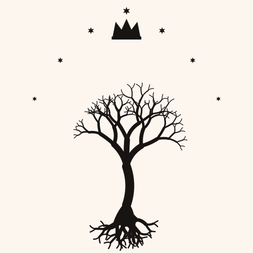
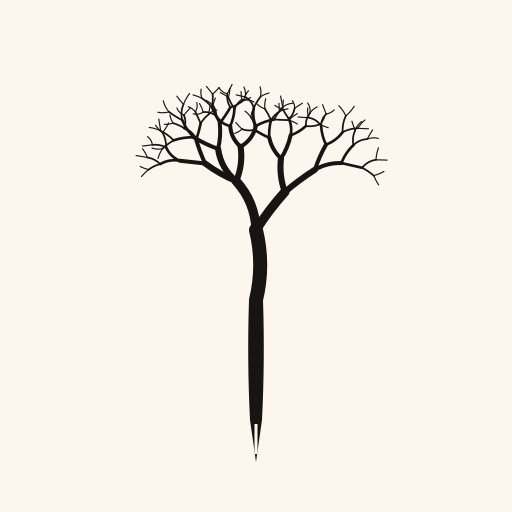
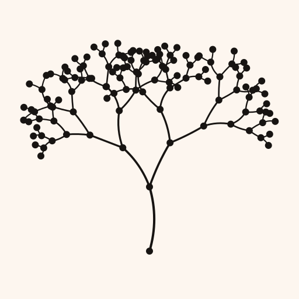
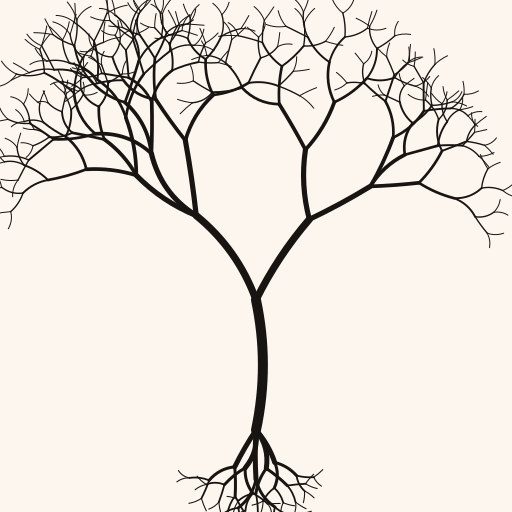
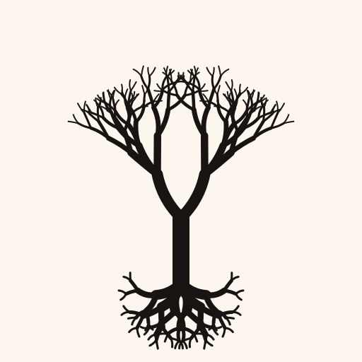
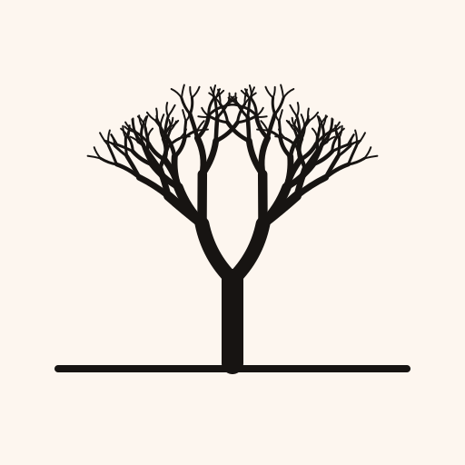
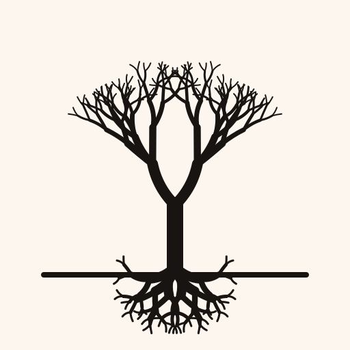
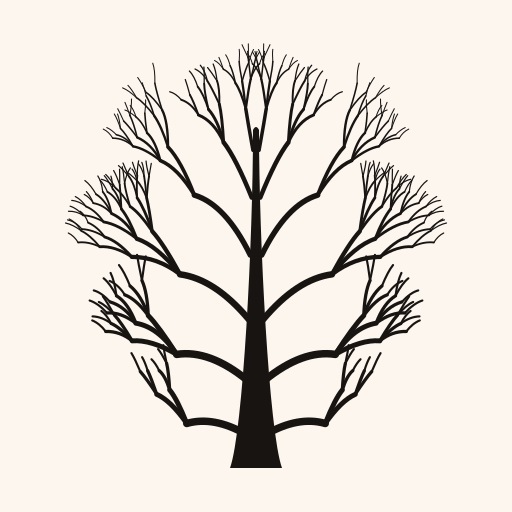

A. Heritage
Full homage — tree, seven stars, crown. Closest to the Minas Tirith reference.
B. Pure Mark (roots)
Symmetric tree with roots. Scales tightly to favicon sizes.
C. Book & Tree
Tree rises from an open book. Makes the 'writing a fable' meaning unambiguous.

D. Quill Tree
Trunk fused with a quill. Writing as the generative act of the tree.

E. Hierarchy
Every branch joint is a node. Speaks to 'hierarchical editor for structured thought.'

F. Linework
Thin-stroke variant. Works as an outline icon in dense chrome.

Pure — roots
Symmetric silhouette, roots floating below the trunk.

Pure — ground
Symmetric silhouette rooted on a ground line. No visible roots.

Pure — ground + roots
Symmetric silhouette with a ground line and roots descending into the earth.

Pure — whimsy
Single trunk running the full height with curved branches springing from it. Flared base, no roots, no ground.